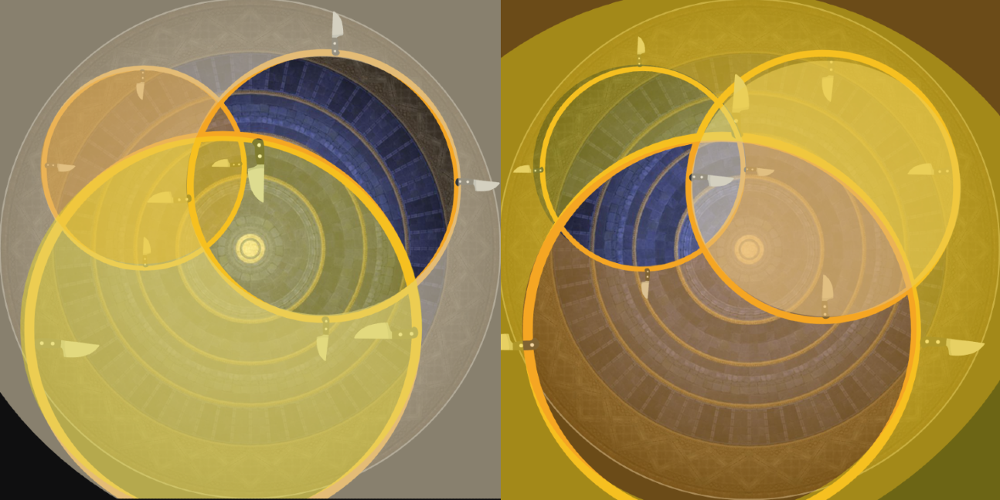
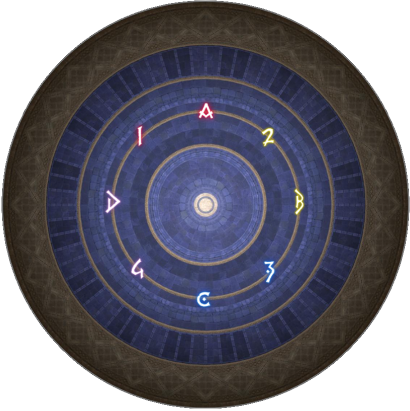

Sword Dancer
"This ancient guardian dwells on the North Horn of the Occult Crescent, its blades magically manipulated with the practiced elegance of a performer. And indeed, there are no few commonalities between dance and the martial arts. Flawless bodily movement is both foundation and finale, and with each new generation of practitioners, even the most basic techniques have spawned countless branching schools of thought. Given that this sword dancer's style bears some resemblance to the Kriegstanz of the Near East, it may be that the two are descended from the same ancestor."
Overview
Throughout the encounter, floating sword directions dictate safe spots: ring swords facing outward form a donut AoE (safe inside), while swords facing inward form a circle AoE (safe outside). When center line swords spawn, always line yourself up on the hilt side.
Fight Timeline
Throwing Swords & Martial Mystique
The boss spawns swords across the arena that move in continuous patterns, while simultaneously jumping around the perimeter to perform cleaves.
- Swords:
- Intercardinal Swords: Two swords spawn on intercardinal positions and repeatedly travel back and forth across the arena.
- Ring Swords: Swords spawn on concentric arena rings and rotate gradually one quadrant at a time. The innermost circle never has a rotating sword.
- First Throwing Swords: Rotating swords appear on the 1st and 3rd rings.
- Second Throwing Swords: Rotating swords appear only on the 2nd ring.
- Cleaves:
- Intercardinal Jump: The boss performs either a front cleave or a back cleave.
- Cardinal Jump: The boss performs a side cleave. Check which side the tethered sword originates from to determine the dangerous half.
- Center Swords:
- A line of swords may also stretch across the middle of the arena. These swords face different directions. Line yourself up directly behind a sword on its hilt side rather than its blade side.
Track the boss continuously to dodge each cleave while maintaining awareness of moving swords around your feet.
Cycloswords Unsheathed 1
The boss casts Cycloswords Unsheathed, spawning a large ring around the arena with floating swords positioned along its perimeter. The swords indicate the sequence and shape of incoming AoEs based on their orientation:
- Orientations:
- Facing Outwards: Performs a donut AoE. Step inside the ring to remain safe.
- Facing Inwards: Performs a large circle AoE. Step outside the ring to remain safe.
- Center Swords:
- Before the first AoE goes off, a line of swords also spawns across the middle of the arena.
- Align yourself with a sword on its hilt side rather than its blade side.
- These center line cleaves resolve simultaneously with the second AoE of the main Cycloswords sequence.
Sword Dance
The boss casts Sword Dance, telegraphing a series of four line AoEs across the arena. Once all four telegraphs complete, the lines explode in the order they were telegraphed.
- Resolution:
- Preposition near the outer wall where the 4th (last) line will explode.
- Watch the sequence of explosions, then step into the safe area left behind by either the 1st or 2nd explosion as soon as it goes off (whichever is closest).
Leaping Lift
The boss briefly becomes untargetable and spawns five swords along the outer edge of the arena. The boss jumps sequentially between each sword, charging two of them with distinct lightning visuals, before returning to the center and becoming targetable again.
- Knockbacks:
- The five outer swords explode sequentially in the exact order the boss jumped to them, each dealing a large arena-wide knockback.
- Preposition near the 1st sword at the start, then ride each knockback along the path between the swords to avoid being pushed into the outer death wall.
- Charged Swords:
- The two charged swords unleash a large circle AoE explosion upon resolving.
- Angle your knockback to land just outside the circle, then run in close to the charged sword as soon as its AoE vanishes.
- Center Swords:
- Near the end of the sequence, a line of swords spawns across the middle of the arena. Line yourself up directly behind a sword on its hilt side rather than its blade side.
Cycloswords Unsheathed 2
The boss spawns three rings around the arena simultaneously, with floating swords outlining each ring to indicate its AoE direction:
- Patterns:
- Exactly one ring has swords facing outwards (donut AoE).
- The remaining two rings have swords facing inwards (circle AoEs).
- Resolution:
- First Explosion: Stand inside the single donut ring while remaining outside the other two circle rings.
- Second Explosion: The sword orientations on all three rings immediately swap. Move into the overlap of the other two rings while stepping completely out of the first ring.

Cycloswords Unsheathed 3
The boss spawns three rings around the arena one by one, with floating swords indicating each ring's initial AoE shape (donut vs circle). The explosions resolve in a four-step sequential chain:
- Sequence:
- 1st Explosion: First Ring (initial orientation).
- 2nd Explosion: First Ring (flipped orientation) + Second Ring (initial orientation).
- 3rd Explosion: Second Ring (flipped orientation) + Third Ring (initial orientation).
- 4th Explosion: Third Ring (flipped orientation).
Track the spawn order and initial sword directions, adjusting your position step by step as each wave resolves.
Waymarks
Below is the waymark setup used for this encounter.
